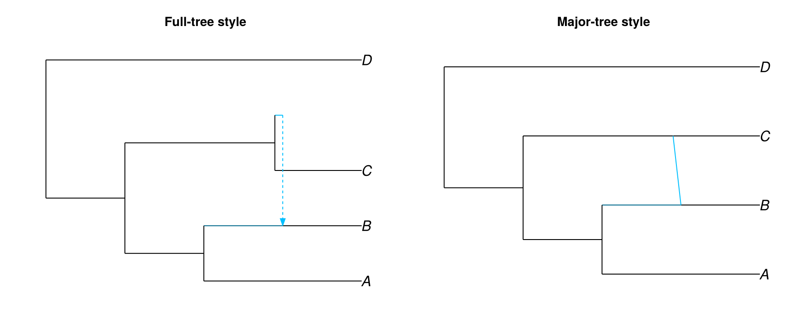
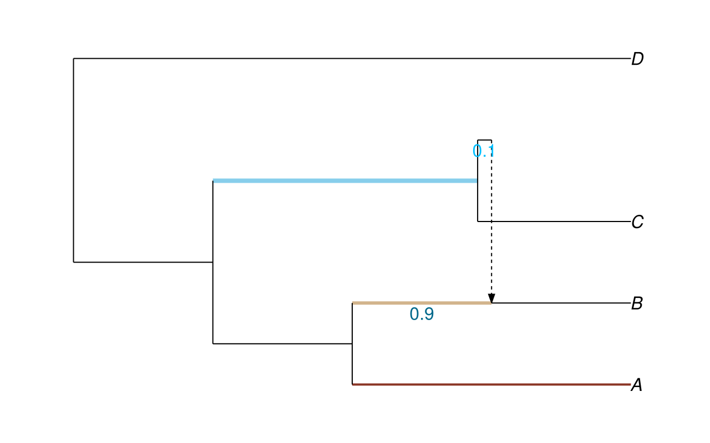
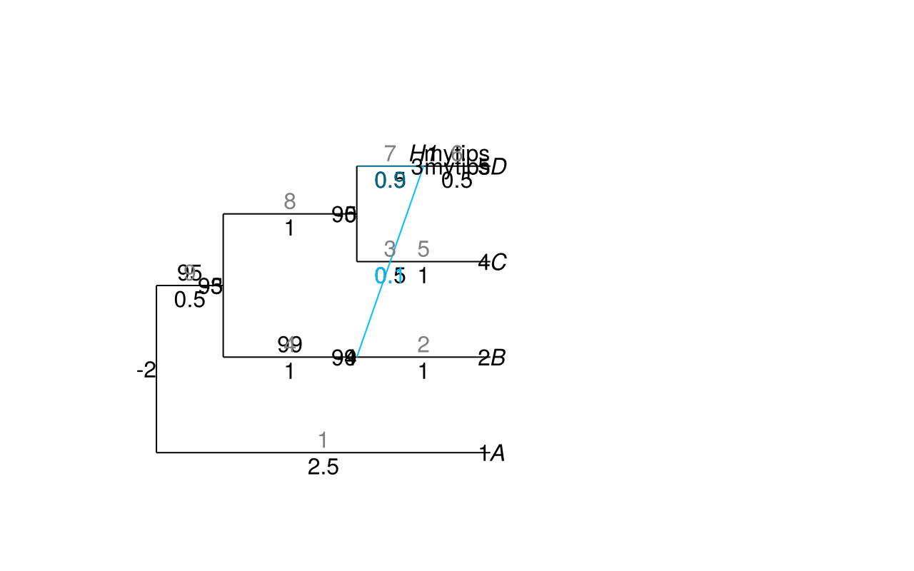

Render verification
The artifacts below exercise the live CairoMakie rendering path used by PhyloMakie. They render directly from package code and docs-local case data so the page stays live without depending on test support files. The public entry surfaces themselves are documented on Public API.
Style distinction artifact
This live artifact renders the accepted reticulate network through the same internal owner under the governed :fulltree and :majortree style branches.
style_figure
Markdown.parse(
"""
| Style | Resolved style | Minor-edge shaft linestyle |
| --- | --- | --- |
| Full-tree | `$(fulltree_case.layers.resolved_style)` | `$(fulltree_case.layers.minor_edge_shafts.linestyle)` |
| Major-tree | `$(majortree_case.layers.resolved_style)` | `$(majortree_case.layers.minor_edge_shafts.linestyle)` |
""",
)| Style | Resolved style | Minor-edge shaft linestyle |
|---|---|---|
| Full-tree | fulltree | dash |
| Major-tree | majortree | solid |
Edge-color, gamma-color, and width artifact
This artifact exercises dict-driven edgecolor, defaultedgecolor, major/minor hybrid colors, scalar-versus-dict width handling, and gamma text color independence in one live render.
color_case.figure
Markdown.parse(
"""
| Proof surface | Live value |
| --- | --- |
| Dict override edges | `$(collect(keys(Dict(color_fixture.edgecolor_overrides))))` |
| Default edge fallback | `$(unique(color_case.layers.node_bars.colors))` |
| Minor edge colors | `$(unique(color_case.layers.minor_edge_shafts.colors))` |
| Minor gamma text colors | `$(unique(color_case.layers.minor_gamma_labels.colors))` |
| Major gamma text colors | `$(unique(color_case.layers.major_gamma_labels.colors))` |
| Edge widths | `$(color_case.layers.edge_segments.linewidths)` |
""",
)| Proof surface | Live value |
|---|---|
| Dict override edges | [7, 3, 1] |
| Default edge fallback | ColorTypes.RGBA{Float32}[RGBA(0.0, 0.0, 0.0, 1.0)] |
| Minor edge colors | ColorTypes.RGBA{Float32}[RGBA(0.0, 0.0, 0.0, 1.0)] |
| Minor gamma text colors | ColorTypes.RGBA{Float32}[RGBA(0.0, 0.7490196, 1.0, 1.0)] |
| Major gamma text colors | ColorTypes.RGBA{Float32}[RGBA(0.0, 0.40784314, 0.54509807, 1.0)] |
| Edge widths | [2.0, 1.0, 3.0, 1.0, 1.0, 1.0, 4.0, 1.0, 1.0] |
Text-layer and explicit-limit artifact
This artifact proves that text layers and final limits are consumed from PlotLayout.annotations and PlotBounds rather than recomputed inside the render owner.
annotation_case.figure
Markdown.parse(
"""
| Proof surface | Live value |
| --- | --- |
| Applied x limits | `$(annotation_case.layers.applied_xlim)` |
| Applied y limits | `$(annotation_case.layers.applied_ylim)` |
| Tip labels | `$(annotation_case.layers.tip_labels.strings)` |
| Internal node names | `$(annotation_case.layers.internal_node_names.strings)` |
| Node numbers | `$(annotation_case.layers.node_numbers.strings)` |
| Edge numbers | `$(annotation_case.layers.edge_numbers.strings)` |
| Edge lengths | `$(annotation_case.layers.edge_lengths.strings)` |
| Minor gamma labels | `$(annotation_case.layers.minor_gamma_labels.strings)` |
| Major gamma labels | `$(annotation_case.layers.major_gamma_labels.strings)` |
""",
)| Proof surface | Live value |
|---|---|
| Applied x limits | (0.0, 6.5) |
| Applied y limits | (0.0, 5.5) |
| Tip labels | ["A", "B", "C", "D"] |
| Internal node names | ["", "H1", "", "", ""] |
| Node numbers | ["1", "2", "-4", "4", "5", "3", "-5", "-3", "-2"] |
| Edge numbers | ["1", "2", "3", "4", "5", "6", "7", "8", "9"] |
| Edge lengths | ["2.5", "1", "0.5", "1", "1", "0.5", "0.5", "1", "0.5"] |
| Minor gamma labels | ["0.1"] |
| Major gamma labels | ["0.9"] |